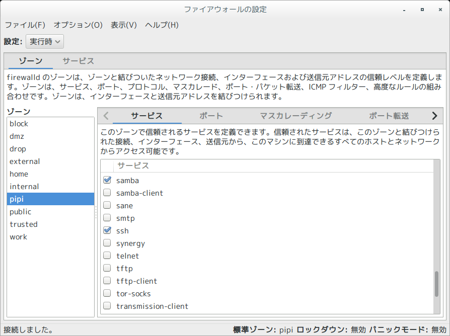
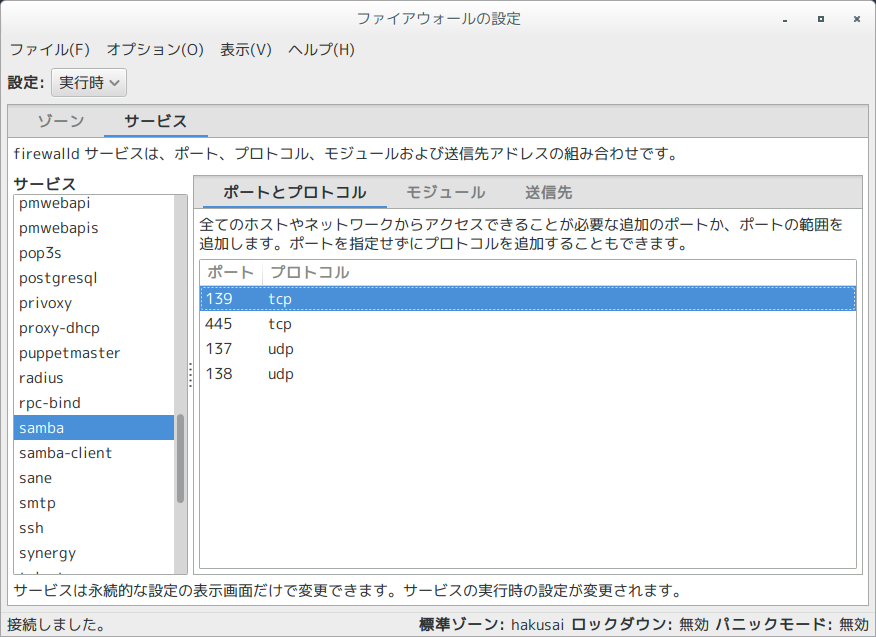

Table of Contents
自宅の Raspberry Pi にfirewalldを入れて遊んで見ました。
1 firewalld情報収集から始まる
- iptablesが土台となります、firewalldの設定はipatbles設定へ変換される
- D-BUSのAPI経由でアプリケーションから制御が可能
- 受送信ルールはゾーンファイルにて定義する
- 受送信サービスタイプ（サービス名＋ポートより識別する）による通信制限が可能
- 受送信ICMPタイプによる通信制限が可能
- 通信元のIPサブネットによる通信制限が可能
- NICポートごとにゾーンファイルを適用することが可能 （複数同時適用可能かは未検証）
2 検証環境
- Archlinux : https://www.archlinux.org/
- firewalld-0.3.10-1 : https://www.archlinux.org/packages/community/any/firewalld/
3 firewalldのパッケージ構成
/etc/ /etc/conf.d/ /etc/conf.d/firewalld ★firewalldサービス起動パラメータの定義 /etc/dbus-1/ /etc/dbus-1/system.d/ /etc/dbus-1/system.d/FirewallD.conf /etc/firewalld/ /etc/firewalld/firewalld.conf /etc/firewalld/icmptypes/ ★独自ICMPタイプの定義はここに追加 /etc/firewalld/lockdown-whitelist.xml /etc/firewalld/services/ ★独自サービス定義はここに追加 /etc/firewalld/zones/ ★独自のゾーンファイルはここに追加 /etc/xdg/ /etc/xdg/autostart/ /etc/xdg/autostart/firewall-applet.desktop /usr/ /usr/bin/ /usr/bin/firewall-applet ★GUIツール /usr/bin/firewall-cmd /usr/bin/firewall-config /usr/bin/firewall-offline-cmd /usr/bin/firewalld /usr/lib/ /usr/lib/firewalld/ /usr/lib/firewalld/icmptypes/ ★ICMPタイプの定義 /usr/lib/firewalld/icmptypes/destination-unreachable.xml /usr/lib/firewalld/icmptypes/echo-reply.xml /usr/lib/firewalld/icmptypes/echo-request.xml /usr/lib/firewalld/icmptypes/parameter-problem.xml /usr/lib/firewalld/icmptypes/redirect.xml /usr/lib/firewalld/icmptypes/router-advertisement.xml /usr/lib/firewalld/icmptypes/router-solicitation.xml /usr/lib/firewalld/icmptypes/source-quench.xml /usr/lib/firewalld/icmptypes/time-exceeded.xml /usr/lib/firewalld/services/ ★サービス定義 /usr/lib/firewalld/services/amanda-client.xml /usr/lib/firewalld/services/amanda-k5-client.xml /usr/lib/firewalld/services/bacula-client.xml /usr/lib/firewalld/services/bacula.xml /usr/lib/firewalld/services/dhcp.xml /usr/lib/firewalld/services/dhcpv6-client.xml /usr/lib/firewalld/services/dhcpv6.xml /usr/lib/firewalld/services/dns.xml /usr/lib/firewalld/services/freeipa-ldap.xml /usr/lib/firewalld/services/freeipa-ldaps.xml /usr/lib/firewalld/services/freeipa-replication.xml /usr/lib/firewalld/services/ftp.xml /usr/lib/firewalld/services/high-availability.xml /usr/lib/firewalld/services/http.xml /usr/lib/firewalld/services/https.xml /usr/lib/firewalld/services/imaps.xml /usr/lib/firewalld/services/ipp-client.xml /usr/lib/firewalld/services/ipp.xml /usr/lib/firewalld/services/ipsec.xml /usr/lib/firewalld/services/kerberos.xml /usr/lib/firewalld/services/kpasswd.xml /usr/lib/firewalld/services/ldap.xml /usr/lib/firewalld/services/ldaps.xml /usr/lib/firewalld/services/libvirt-tls.xml /usr/lib/firewalld/services/libvirt.xml /usr/lib/firewalld/services/mdns.xml /usr/lib/firewalld/services/mountd.xml /usr/lib/firewalld/services/ms-wbt.xml /usr/lib/firewalld/services/mysql.xml /usr/lib/firewalld/services/nfs.xml /usr/lib/firewalld/services/ntp.xml /usr/lib/firewalld/services/openvpn.xml /usr/lib/firewalld/services/pmcd.xml /usr/lib/firewalld/services/pmproxy.xml /usr/lib/firewalld/services/pmwebapi.xml /usr/lib/firewalld/services/pmwebapis.xml /usr/lib/firewalld/services/pop3s.xml /usr/lib/firewalld/services/postgresql.xml /usr/lib/firewalld/services/privoxy.xml /usr/lib/firewalld/services/proxy-dhcp.xml /usr/lib/firewalld/services/puppetmaster.xml /usr/lib/firewalld/services/radius.xml /usr/lib/firewalld/services/rpc-bind.xml /usr/lib/firewalld/services/samba-client.xml /usr/lib/firewalld/services/samba.xml /usr/lib/firewalld/services/sane.xml /usr/lib/firewalld/services/smtp.xml /usr/lib/firewalld/services/ssh.xml /usr/lib/firewalld/services/synergy.xml /usr/lib/firewalld/services/telnet.xml /usr/lib/firewalld/services/tftp-client.xml /usr/lib/firewalld/services/tftp.xml /usr/lib/firewalld/services/tor-socks.xml /usr/lib/firewalld/services/transmission-client.xml /usr/lib/firewalld/services/vnc-server.xml /usr/lib/firewalld/services/wbem-https.xml /usr/lib/firewalld/services/xmpp-bosh.xml /usr/lib/firewalld/services/xmpp-client.xml /usr/lib/firewalld/services/xmpp-local.xml /usr/lib/firewalld/services/xmpp-server.xml /usr/lib/firewalld/zones/ ★デフォルトで用意されたゾーンの定義ファイル /usr/lib/firewalld/zones/block.xml /usr/lib/firewalld/zones/dmz.xml /usr/lib/firewalld/zones/drop.xml /usr/lib/firewalld/zones/external.xml /usr/lib/firewalld/zones/home.xml /usr/lib/firewalld/zones/internal.xml /usr/lib/firewalld/zones/public.xml ★デフォルトはこちらのゾーンが適用される /usr/lib/firewalld/zones/trusted.xml /usr/lib/firewalld/zones/work.xml /usr/lib/python3.4/ /usr/lib/python3.4/site-packages/ /usr/lib/python3.4/site-packages/firewall/ /usr/lib/python3.4/site-packages/firewall/__init__.py /usr/lib/python3.4/site-packages/firewall/client.py /usr/lib/python3.4/site-packages/firewall/config/ /usr/lib/python3.4/site-packages/firewall/config/__init__.py /usr/lib/python3.4/site-packages/firewall/config/dbus.py /usr/lib/python3.4/site-packages/firewall/core/ /usr/lib/python3.4/site-packages/firewall/core/__init__.py /usr/lib/python3.4/site-packages/firewall/core/base.py /usr/lib/python3.4/site-packages/firewall/core/ebtables.py /usr/lib/python3.4/site-packages/firewall/core/fw.py /usr/lib/python3.4/site-packages/firewall/core/fw_config.py /usr/lib/python3.4/site-packages/firewall/core/fw_direct.py /usr/lib/python3.4/site-packages/firewall/core/fw_icmptype.py /usr/lib/python3.4/site-packages/firewall/core/fw_policies.py /usr/lib/python3.4/site-packages/firewall/core/fw_service.py /usr/lib/python3.4/site-packages/firewall/core/fw_test.py /usr/lib/python3.4/site-packages/firewall/core/fw_zone.py /usr/lib/python3.4/site-packages/firewall/core/io/ /usr/lib/python3.4/site-packages/firewall/core/io/__init__.py /usr/lib/python3.4/site-packages/firewall/core/io/direct.py /usr/lib/python3.4/site-packages/firewall/core/io/firewalld_conf.py /usr/lib/python3.4/site-packages/firewall/core/io/icmptype.py /usr/lib/python3.4/site-packages/firewall/core/io/io_object.py /usr/lib/python3.4/site-packages/firewall/core/io/lockdown_whitelist.py /usr/lib/python3.4/site-packages/firewall/core/io/service.py /usr/lib/python3.4/site-packages/firewall/core/io/zone.py /usr/lib/python3.4/site-packages/firewall/core/ipXtables.py /usr/lib/python3.4/site-packages/firewall/core/logger.py /usr/lib/python3.4/site-packages/firewall/core/modules.py /usr/lib/python3.4/site-packages/firewall/core/prog.py /usr/lib/python3.4/site-packages/firewall/core/rich.py /usr/lib/python3.4/site-packages/firewall/core/watcher.py /usr/lib/python3.4/site-packages/firewall/dbus_utils.py /usr/lib/python3.4/site-packages/firewall/errors.py /usr/lib/python3.4/site-packages/firewall/functions.py /usr/lib/python3.4/site-packages/firewall/fw_types.py /usr/lib/python3.4/site-packages/firewall/server/ /usr/lib/python3.4/site-packages/firewall/server/__init__.py /usr/lib/python3.4/site-packages/firewall/server/config.py /usr/lib/python3.4/site-packages/firewall/server/config_icmptype.py /usr/lib/python3.4/site-packages/firewall/server/config_service.py /usr/lib/python3.4/site-packages/firewall/server/config_zone.py /usr/lib/python3.4/site-packages/firewall/server/decorators.py /usr/lib/python3.4/site-packages/firewall/server/firewalld.py /usr/lib/python3.4/site-packages/firewall/server/server.py /usr/lib/systemd/ /usr/lib/systemd/system/ /usr/lib/systemd/system/firewalld.service ★systemdサービス定義ファイル /usr/share/ /usr/share/appdata/ /usr/share/appdata/firewall-config.appdata.xml /usr/share/applications/ /usr/share/applications/firewall-config.desktop /usr/share/bash-completion/ /usr/share/bash-completion/completions/ /usr/share/bash-completion/completions/firewall-cmd /usr/share/firewalld/ /usr/share/firewalld/firewall-config.glade /usr/share/firewalld/gtk3_chooserbutton.py /usr/share/glib-2.0/ /usr/share/glib-2.0/schemas/ /usr/share/glib-2.0/schemas/org.fedoraproject.FirewallApplet.gschema.xml /usr/share/glib-2.0/schemas/org.fedoraproject.FirewallConfig.gschema.xml /usr/share/icons/(★iconディレクトリ配下は省略) /usr/share/locale/(★localeディレクトリ配下は省略) /usr/share/man/ /usr/share/man/man1/ /usr/share/man/man1/firewall-applet.1.gz /usr/share/man/man1/firewall-cmd.1.gz /usr/share/man/man1/firewall-config.1.gz /usr/share/man/man1/firewall-offline-cmd.1.gz /usr/share/man/man1/firewalld.1.gz /usr/share/man/man5/ /usr/share/man/man5/firewalld.conf.5.gz /usr/share/man/man5/firewalld.dbus.5.gz /usr/share/man/man5/firewalld.direct.5.gz /usr/share/man/man5/firewalld.icmptype.5.gz /usr/share/man/man5/firewalld.lockdown-whitelist.5.gz /usr/share/man/man5/firewalld.richlanguage.5.gz /usr/share/man/man5/firewalld.service.5.gz /usr/share/man/man5/firewalld.zone.5.gz /usr/share/man/man5/firewalld.zones.5.gz /usr/share/polkit-1/ /usr/share/polkit-1/actions/ /usr/share/polkit-1/actions/org.fedoraproject.FirewallD1.desktop.policy /usr/share/polkit-1/actions/org.fedoraproject.FirewallD1.policy /usr/share/polkit-1/actions/org.fedoraproject.FirewallD1.server.policy
4 定義ファイルの見本
4.1 publicゾーン定義ファイル
[akira@pipi ~]$ cat /usr/lib/firewalld/zones/public.xml <?xml version="1.0" encoding="utf-8"?> <zone> <short>Public</short> <description>For use in public areas. You do not trust the other computers on networks to not harm your computer. Only selected incoming connections are accepted.</description> <service name="ssh"/> <service name="dhcpv6-client"/> </zone> [akira@pipi ~]$
4.2 SSHサービス定義ファイル
プロトコール名とポート番号で識別する。
[akira@pipi ~]$ cat /usr/lib/firewalld/services/ssh.xml <?xml version="1.0" encoding="utf-8"?> <service> <short>SSH</short> <description>Secure Shell (SSH) is a protocol for logging into and executing commands on remote machines. It provides secure encrypted communications. If you plan on accessing your machine remotely via SSH over a firewalled interface, enable this option. You need the openssh-server package installed for this option to be useful.</description> <port protocol="tcp" port="22"/> </service> [akira@pipi ~]$
4.3 ICMPタイプ定義ファイル
shortタグのICMPタイプ名で識別する。使用可能なタイプ名は iptables -p icmp -h で確認
できる。
[akira@pipi ~]$ cat /usr/lib/firewalld/icmptypes/destination-unreachable.xml <?xml version="1.0" encoding="utf-8"?> <icmptype> <short>Destination Unreachable</short> <description>This error message is generated by a host or gateway if the destination is not reachable.</description> </icmptype> ★使用可能なICMPタイプ名の確認 [akira@pipi ~]$ iptables -p icmp -h --省略-- Valid ICMP Types: any echo-reply (pong) destination-unreachable network-unreachable host-unreachable protocol-unreachable port-unreachable fragmentation-needed source-route-failed network-unknown host-unknown network-prohibited host-prohibited TOS-network-unreachable TOS-host-unreachable communication-prohibited host-precedence-violation precedence-cutoff source-quench redirect network-redirect host-redirect TOS-network-redirect TOS-host-redirect echo-request (ping) router-advertisement router-solicitation time-exceeded (ttl-exceeded) ttl-zero-during-transit ttl-zero-during-reassembly parameter-problem ip-header-bad required-option-missing timestamp-request timestamp-reply address-mask-request address-mask-reply
5 firewalldコマンドインタフェース
| firewall-cmd | –reload | 定義の変更を反映する |
| –complete-reload | ||
| –state | ステータスの確認 | |
| –list-all-zones | ゾーン設定の確認 | |
| –get-services | 定義済みサービス一覧の取得 | |
| –get-icmptypes | 定義済みICMP応答一覧の取得 | |
| –get-default-zone | デフォルトゾーンの確認 | |
| –set-default-zone=<ゾーン名> | デフォルトゾーンの変更 | |
| –remove-interface=<nic名> | 対象nicの適用ゾーンを除去 | |
| ★サービスの許可設定 | ||
| –list-services –zone=<ゾーン名> | 対象ゾーンに許可されたサービス | |
| –query-service=<サービス名> –zone=<ゾーン名> | 指定のサービスが許可されているか確認 | |
| –add-service=<サービス名> –zone=<ゾーン名> | 許可するサービスを追加 | |
| –remove-service=<サービス名> –zone=<ゾーン名> | 許可するサービスを削除 | |
| ★ICMPタイプの拒否設定 | ||
| –list-icmp-blocks –zone=<ゾーン名> | 禁止されているICMPタイプを表示 | |
| –query-icmp-block=<ICMPタイプ名> –zone=<ゾーン名> | ICMPタイプが禁止されているか確認 | |
| –add-icmp-block=<ICMPタイプ名> –zone=<ゾーン名> | 拒否するICMPタイプの追加 | |
| –remove-icmp-block=<ICMPタイプ名> –zone=<ゾーン名> | 拒否するICMPタイプの除外 | |
| ★IPマスカレードのOn/Off設定 | ||
| –query-masquerade –zone=<ゾーン名> | 現在の設定を確認 | |
| –add-masquerade –zone=<ゾーン名> | IPマスカレードを有効化 | |
| –remove-masquerade –zone=<ゾーン名> | IPマスカレードを無効化 | |
| ★nicに適用する | ||
| –add-interface=<nic名> –zone=<ゾーン名> | 対象nicにゾーンを適用 | |
| –remove-interface=eth1 | 適用ゾーンを除去 | |
| –list-interfaces –zone=<ゾーン名> | ゾーンが適用されるNICポートを表示 | |
| –change-interface=<nic名> –zone=<ゾーン名> | nicに適用するゾーンを変更する | |
| –query-interface=interface=h1 | nicに対象ゾーンが適用されたかの確認 | |
| ★通信元のIPサブネットによる通信制限 | ||
| –list-sources –zone=<ゾーン> | ||
| –get-zone-of-source=<サブネット> | ||
| –query-source=<サブネット> | ||
| –add-source=<サブネット> –zone=<ゾーン> | ||
| –change-source=<サブネット> –zone=<ゾーン> | ||
| –remove-source=<サブネット> | ||
| ★システム保守時役立つコマンド | ||
| –panic-on | すべてのネットワーク通信が遮断する | |
| –panic-off | パニックモードを止める |
6 インストールとサービスの有効化
pacman コマンドでインストール
[akira@pipi ~]$ sudo pacman -S firewalld 依存関係を解決しています... 相互衝突をチェックしています... パッケージ (1): firewalld-0.3.10-1 Total Installed Size: 2.64 MiB :: インストールを行いますか？ [Y/n] (1/1) キーリングのキーを確認 [############################################################################] 100% (1/1) パッケージの整合性をチェック [############################################################################] 100% (1/1) パッケージファイルのロード [############################################################################] 100% (1/1) ファイルの衝突をチェック [############################################################################] 100% (1/1) 空き容量を確認 [############################################################################] 100% (1/1) インストール firewalld [############################################################################] 100% [akira@pipi ~]$
systemctl コマンドでサービスの有効化、起動
★サービスの有効化
[akira@pipi ~]$ sudo systemctl enable firewalld.service
[sudo] password for akira:
ln -s '/usr/lib/systemd/system/firewalld.service' '/etc/systemd/system/dbus-org.fedoraproject.FirewallD1.service'
ln -s '/usr/lib/systemd/system/firewalld.service' '/etc/systemd/system/basic.target.wants/firewalld.service'
★サービスの起動
[akira@pipi ~]$ sudo systemctl start firewalld.service
★サービス起動時のログ
[akira@pipi ~]$ sudo tail -f /var/log/everything.log
Jun 16 10:15:29 pipi systemd[1]: Starting firewalld - dynamic firewall daemon...
Jun 16 10:15:29 pipi systemd[1]: Failed to reset devices.list on /system.slice: Invalid argument
~~~~~~~~~~~~~~~~~~~~~~~~~~~~~~~~~~~~~~~~~~~~~~~~~~~~~~~~~~~~~~~
Jun 16 10:15:31 pipi kernel: [ 6372.219681] nf_conntrack version 0.5.0 (16384 buckets, 65536 max)
Jun 16 10:15:31 pipi kernel: [ 6372.360695] ip6_tables: (C) 2000-2006 Netfilter Core Team
Jun 16 10:15:31 pipi kernel: [ 6372.486263] Ebtables v2.0 registered
Jun 16 10:15:31 pipi kernel: [ 6372.504222] Bridge firewalling registered
Jun 16 10:15:32 pipi systemd[1]: Started firewalld - dynamic firewall daemon.
★サービスステータスの確認
[akira@pipi ~]$ sudo systemctl status firewalld.service
● firewalld.service - firewalld - dynamic firewall daemon
Loaded: loaded (/usr/lib/systemd/system/firewalld.service; enabled)
Active: active (running) since 月 2014-06-16 10:15:32 JST; 3min 22s ago
Main PID: 8679 (firewalld)
CGroup: /system.slice/firewalld.service
└─8679 /usr/bin/python -Es /usr/bin/firewalld --nofork --nopid
6月 16 10:15:32 pipi systemd[1]: Started firewalld - dynamic firewall daemon.
[akira@pipi ~]$ firewall-cmd --state
/usr/lib/systemd/system/firewalld.service サービス起動ファイルの中身
[Unit] Description=firewalld - dynamic firewall daemon Before=network.target Before=libvirtd.service Before=NetworkManager.service Conflicts=iptables.service ip6tables.service ebtables.service ★iptables, ebtablesサービスとのコンフリクト定義 [Service] EnvironmentFile=-/etc/conf.d/firewalld ★起動パラメータファイル ExecStart=/usr/bin/firewalld --nofork --nopid $FIREWALLD_ARGS ★起動コマンド ExecReload=/bin/kill -HUP $MAINPID ★停止コマンド # supress to log debug and error output also to /var/log/messages StandardOutput=null StandardError=null Type=dbus BusName=org.fedoraproject.FirewallD1 [Install] WantedBy=basic.target Alias=dbus-org.fedoraproject.FirewallD1.service
7 pingをブロックしてみた
public ゾーンデフォルト状態ではすべてのICMPタイプを許可する。ここではpingをブロック
するようにしてみた。
★echo-requestをブロックする [akira@pipi ~]$ sudo firewall-cmd --add-icmp-block=echo-request --zone=public success ★設定の確認 [akira@pipi ~]$ sudo firewall-cmd --list-icmp-blocks --zone=public echo-request ★iptablesにて設定を確認する [akira@pipi ~]$ sudo iptables-save ~~省略~~ -A IN_public_deny -p icmp -m icmp --icmp-type 8 -j REJECT --reject-with icmp-host-prohibited ★タイプコードが8のicmpパケットを拒否するようにする COMMIT # Completed on Mon Jun 16 11:13:17 2014
windows端末から確認して見る、見事にブロックができた。
C:\Users\akira>ping 192.168.100.4
192.168.100.4 に ping を送信しています 32 バイトのデータ:
192.168.100.4 からの応答: 宛先ホストに到達できません。
192.168.100.4 からの応答: 宛先ホストに到達できません。
192.168.100.4 からの応答: 宛先ホストに到達できません。
192.168.100.4 からの応答: 宛先ホストに到達できません。
192.168.100.4 の ping 統計:
パケット数: 送信 = 4、受信 = 4、損失 = 0 (0% の損失)、
C:\Users\akira>
8 sambaサービスを許可してみた
[akira@pipi ~]$ sudo firewall-cmd --add-service=samba --zone=public success [akira@pipi ~]$ sudo iptables-save ~~省略~~~ -A IN_public_allow -p udp -m udp --dport 137 -m conntrack --ctstate NEW -j ACCEPT -A IN_public_allow -p udp -m udp --dport 138 -m conntrack --ctstate NEW -j ACCEPT -A IN_public_allow -p tcp -m tcp --dport 139 -m conntrack --ctstate NEW -j ACCEPT -A IN_public_allow -p tcp -m tcp --dport 445 -m conntrack --ctstate NEW -j ACCEPT ~~省略~~~
9 独自ルールで通信履歴をロギングしてみた
Rich Language を用いて、特定のクライアントからhttpサービスを利用時にロギングする。
★ルール追加 [akira@pipi ~]$ sudo firewall-cmd --add-rich-rule='rule family="ipv4" source address="192.168.100.3" port port="80" protocol="tcp" log prefix="http connection" level="info" accept' --zone=pipi success ★iptablesの確認 [akira@pipi ~]$ sudo iptables-save # Generated by iptables-save v1.4.21 on Mon Jun 16 13:54:04 2014 ~~省略~~ -A IN_pipi_log -s 192.168.100.3/32 -p tcp -m tcp --dport 80 -m conntrack --ctstate NEW -j LOG --log-prefix "http connection" --log-level 6 COMMIT ★Apacheサーバの起動 [akira@pipi ~]$ sudo systemctl start httpd ★ログ確認 [akira@pipi ~]$ sudo tail -f /var/log/everything.log Jun 16 14:12:25 pipi systemd[1]: Starting Apache Web Server... Jun 16 14:12:26 pipi systemd[1]: PID file /run/httpd/httpd.pid not readable (yet?) after start. Jun 16 14:12:26 pipi systemd[1]: Started Apache Web Server. Jun 16 14:13:00 pipi kernel: [ 2076.795011] http connectionIN=eth0 OUT= MAC=8c:89:a5:45:1d:ef:00:21:85:a9:65:7b:08:00 SRC=192.168.100.3 DST=192.168.100.4 LEN=52 TOS=0x00 PREC=0x00 TTL=128 ID=28405 DF PROTO=TCP SPT=53049 DPT=80 WINDOW=8192 RES=0x00 SYN URGP=0 Jun 16 14:13:44 pipi kernel: [ 2120.509739] http connectionIN=eth0 OUT= MAC=8c:89:a5:45:1d:ef:00:21:85:a9:65:7b:08:00 SRC=192.168.100.3 DST=192.168.100.4 LEN=52 TOS=0x00 PREC=0x00 TTL=128 ID=28755 DF PROTO=TCP SPT=53059 DPT=80 WINDOW=8192 RES=0x00 SYN URGP=
10 独自のゾーンファイルにしてみた
/etc/firewalld/zones/ 配下に独自のゾーンファイルを作成する。
[akira@pipi ~]$ sudo touch /etc/firewalld/zones/pipi.xml [akira@pipi ~]$ cat /etc/firewalld/zones/pipi.xml <?xml version="1.0" encoding="utf-8"?> <zone> <short>Pipi</short> <description>For use in pipi areas.</description> <service name="ssh"/> <service name="samba"/> <!-- <service name="samba-client"/> --> <service name="dhcpv6-client"/> </zone> [akira@pipi ~]$
/etc/firewalld/firewalld.conf ファイルにDefaultZoneを独自ゾーン名(ファイル名)に変更える。
# firewalld config file # default zone # The default zone used if an empty zone string is used. # Default: public DefaultZone=pipi ★ここです ~~省略~~
サービスを再起動する
[akira@pipi ~]$ sudo systemctl stop firewalld ★サービス停止 [akira@pipi ~]$ sudo iptables -L Chain INPUT (policy ACCEPT) target prot opt source destination Chain FORWARD (policy ACCEPT) target prot opt source destination Chain OUTPUT (policy ACCEPT) target prot opt source destination [akira@pipi ~]$ sudo systemctl start firewalld ★サービス起動 [akira@pipi ~]$ sudo iptables-save ~~省略~~ -A IN_pipi -j IN_pipi_allow -A IN_pipi_allow -p tcp -m tcp --dport 22 -m conntrack --ctstate NEW -j ACCEPT -A IN_pipi_allow -p udp -m udp --dport 137 -m conntrack --ctstate NEW -j ACCEPT -A IN_pipi_allow -p udp -m udp --dport 138 -m conntrack --ctstate NEW -j ACCEPT -A IN_pipi_allow -p tcp -m tcp --dport 139 -m conntrack --ctstate NEW -j ACCEPT -A IN_pipi_allow -p tcp -m tcp --dport 445 -m conntrack --ctstate NEW -j ACCEPT COMMIT # Completed on Mon Jun 16 13:31:04 2014 [akira@pipi ~]$
firewall-cmd --permanent を用いて、pingのブロック設定を永続化させる。
[akira@pipi ~]$ sudo firewall-cmd --permanent --zone=pipi --add-icmp-block=echo-request success [akira@pipi ~]$ sudo systemctl restart firewalld ★ icmp-blockタグが自動的にゾーン定義ファイルに反映される。 [akira@pipi ~]$ sudo cat /etc/firewalld/zones/pipi.xml <?xml version="1.0" encoding="utf-8"?> <zone> <short>Pipi</short> <description>For use in pipi areas.</description> <service name="ssh"/> <service name="dhcpv6-client"/> <service name="samba"/> <icmp-block name="echo-request"/> </zone> [akira@pipi ~]$
11 NICポートにゾーンの適用
起動した状態で --remove-interface で適用ゾーンをクリアしようとすると
UNKNOWN_INTERFACE で怒られた。一度 --add-interface してから使えるようになる。
[akira@jizai ~]$ sudo firewall-cmd --remove-interface=eth0 Error: UNKNOWN_INTERFACE: eth0 [akira@jizai ~]$ sudo firewall-cmd --add-interface=eth0 --zone=home success [akira@jizai ~]$ sudo firewall-cmd --remove-interface=eth0
12 GUIツールを使って見た
firewalldのGUIインタフェースツール /usr/bin/firewall-applet として提供されている。
/etc/xdg/autostart/firewall-applet.desktop がインストルされた場合、OSがGUIモードで
起動するとfirewall-appletが自動起動される。システムトレイにアイコンが表示される。
ゾーン設定変種画面 
サービス定義画面 
13 参考した資料
Linux女子部 firewalld徹底入門！ http://www.slideshare.net/enakai/firewalld-study-v10